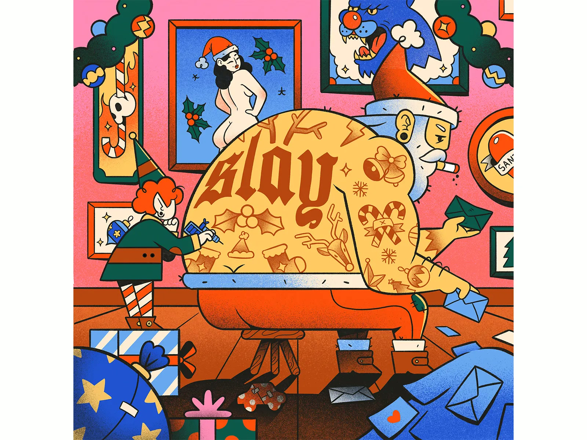
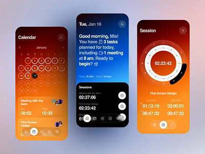
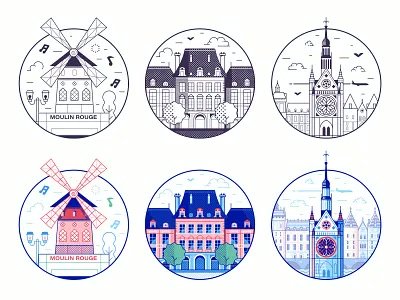
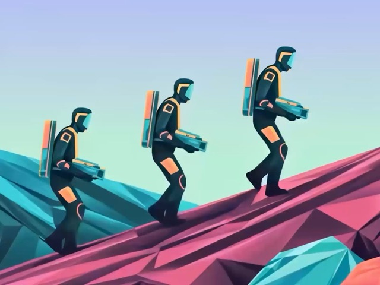
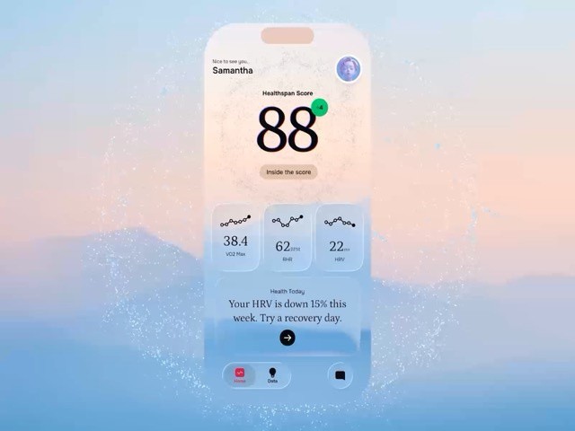
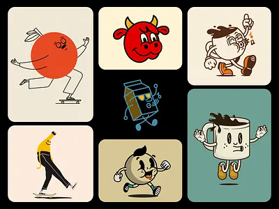
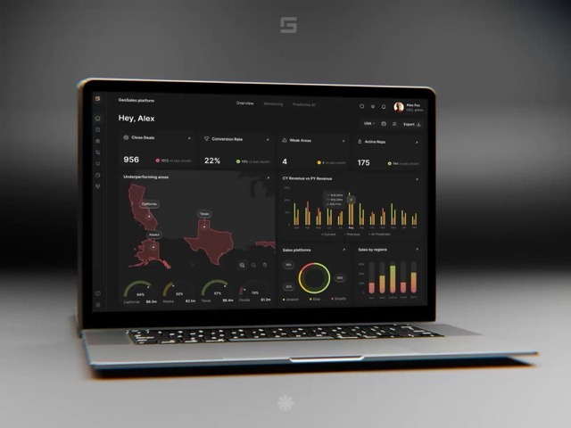
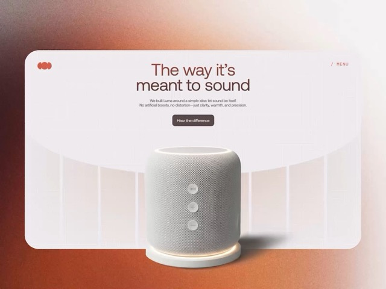

<template>
  <div
    data-composition-id="beat-3-work"
    data-width="1920"
    data-height="1080"
    data-start="0"
    data-duration="6"
  >
    <style>
      [data-composition-id="beat-3-work"] {
        position: relative;
        width: 1920px;
        height: 1080px;
        overflow: hidden;
        background: #F3F3F6;
        font-family: system-ui, sans-serif;
      }

      [data-composition-id="beat-3-work"] .bg-pulse {
        position: absolute;
        top: 0;
        left: 0;
        width: 100%;
        height: 100%;
        background: radial-gradient(circle at 50% 50%, rgba(234, 76, 137, 0.03) 0%, transparent 70%);
        pointer-events: none;
      }

      [data-composition-id="beat-3-work"] .perspective-container {
        position: absolute;
        top: 0;
        left: 0;
        width: 100%;
        height: 100%;
        perspective: 1200px;
      }

      [data-composition-id="beat-3-work"] .grid-wrapper {
        position: relative;
        width: 100%;
        height: 100%;
        transform-style: preserve-3d;
      }

      [data-composition-id="beat-3-work"] .shot-card {
        position: absolute;
        width: 320px;
        height: 240px;
        border: 8px solid #fff;
        border-radius: 12px;
        box-shadow: 0 8px 32px rgba(0, 0, 0, 0.12);
        overflow: hidden;
        opacity: 0;
      }

      [data-composition-id="beat-3-work"] .shot-card.wave-1 { z-index: 1; }
      [data-composition-id="beat-3-work"] .shot-card.wave-2 { z-index: 2; }
      [data-composition-id="beat-3-work"] .shot-card.wave-3 { z-index: 3; }
      [data-composition-id="beat-3-work"] .shot-card.wave-4 { z-index: 4; }

      [data-composition-id="beat-3-work"] .shot-card img {
        display: block;
        width: 100%;
        height: 100%;
        object-fit: cover;
      }
    </style>

    <!-- Background radial pulse -->
    <div class="bg-pulse"></div>

    <!-- 3D perspective container -->
    <div class="perspective-container">
      <div class="grid-wrapper">

        <!-- Wave 1 -->
        <div class="shot-card wave-1" data-wave="1" style="left: 120px; top: 80px;">
          
        </div>
        <div class="shot-card wave-1" data-wave="1" style="left: 500px; top: 120px;">
          
        </div>
        <div class="shot-card wave-1" data-wave="1" style="left: 880px; top: 60px;">
          
        </div>
        <div class="shot-card wave-1" data-wave="1" style="left: 1260px; top: 100px;">
          
        </div>

        <!-- Wave 2 -->
        <div class="shot-card wave-2" data-wave="2" style="left: 200px; top: 380px;">
          
        </div>
        <div class="shot-card wave-2" data-wave="2" style="left: 580px; top: 340px;">
          
        </div>
        <div class="shot-card wave-2" data-wave="2" style="left: 960px; top: 360px;">
          
        </div>
        <div class="shot-card wave-2" data-wave="2" style="left: 1340px; top: 320px;">
          
        </div>

        <!-- Wave 3 -->
        <div class="shot-card wave-3" data-wave="3" style="left: 100px; top: 640px;">
          
        </div>
        <div class="shot-card wave-3" data-wave="3" style="left: 480px; top: 680px;">
          
        </div>
        <div class="shot-card wave-3" data-wave="3" style="left: 860px; top: 620px;">
          
        </div>
        <div class="shot-card wave-3" data-wave="3" style="left: 1240px; top: 660px;">
          
        </div>

        <!-- Wave 4 -->
        <div class="shot-card wave-4" data-wave="4" style="left: 300px; top: 200px;">
          
        </div>
        <div class="shot-card wave-4" data-wave="4" style="left: 680px; top: 460px;">
          
        </div>
        <div class="shot-card wave-4" data-wave="4" style="left: 1060px; top: 240px;">
          
        </div>
        <div class="shot-card wave-4" data-wave="4" style="left: 1440px; top: 500px;">
          
        </div>

      </div>
    </div>

    <script src="https://cdn.jsdelivr.net/npm/gsap@3.14.2/dist/gsap.min.js"></script>
    <script>
      (function () {
        window.__timelines = window.__timelines || {};
        var tl = gsap.timeline({ paused: true });
        window.__timelines["beat-3-work"] = tl;

        var root = document.querySelector('[data-composition-id="beat-3-work"]');
        var bgPulse = root.querySelector(".bg-pulse");
        var gridWrapper = root.querySelector(".grid-wrapper");
        var allCards = root.querySelectorAll(".shot-card");

        var wave1 = root.querySelectorAll('.shot-card.wave-1');
        var wave2 = root.querySelectorAll('.shot-card.wave-2');
        var wave3 = root.querySelectorAll('.shot-card.wave-3');
        var wave4 = root.querySelectorAll('.shot-card.wave-4');

        // Deterministic rotations per card index
        var rotations = [-5, 3, -4, 6, 4, -6, 3, -5, -3, 5, -7, 4, 5, -4, 6, -3];

        // Background pulse: opacity 0.03 → 0.08 → 0.03, 2s sine.inOut, repeat 3
        tl.fromTo(bgPulse,
          { opacity: 0.03 },
          { opacity: 0.08, duration: 1, ease: "sine.inOut", yoyo: true, repeat: 5 },
          0
        );

        // 3D container slow rotation over 6s
        tl.fromTo(gridWrapper,
          { rotateY: 0, rotateX: 2 },
          { rotateY: 8, rotateX: 0, duration: 6, ease: "none" },
          0
        );

        // Wave 1 — enters from left at 0.0s
        wave1.forEach(function (card, i) {
          tl.fromTo(card,
            { x: -400, opacity: 0, scale: 0.7, rotation: rotations[i] - 15 },
            { x: 0, opacity: 1, scale: 1, rotation: rotations[i], duration: 0.6, ease: "back.out(1.2)" },
            0 + i * 0.15
          );
        });

        // Wave 2 — enters from right at 1.2s
        wave2.forEach(function (card, i) {
          var idx = i + 4;
          tl.fromTo(card,
            { x: 400, opacity: 0, scale: 0.7, rotation: rotations[idx] - 15 },
            { x: 0, opacity: 1, scale: 1, rotation: rotations[idx], duration: 0.6, ease: "back.out(1.2)" },
            1.2 + i * 0.15
          );
        });

        // Wave 3 — enters from bottom at 2.4s
        wave3.forEach(function (card, i) {
          var idx = i + 8;
          tl.fromTo(card,
            { y: 400, opacity: 0, scale: 0.7, rotation: rotations[idx] - 15 },
            { y: 0, opacity: 1, scale: 1, rotation: rotations[idx], duration: 0.6, ease: "back.out(1.2)" },
            2.4 + i * 0.15
          );
        });

        // Wave 4 — enters from top at 3.6s
        wave4.forEach(function (card, i) {
          var idx = i + 12;
          tl.fromTo(card,
            { y: -400, opacity: 0, scale: 0.7, rotation: rotations[idx] - 15 },
            { y: 0, opacity: 1, scale: 1, rotation: rotations[idx], duration: 0.6, ease: "back.out(1.2)" },
            3.6 + i * 0.15
          );
        });

        // Collective pulse at 4.5s
        tl.to(allCards, {
          scale: 1.03,
          duration: 0.2,
          ease: "sine.inOut"
        }, 4.5);
        tl.to(allCards, {
          scale: 1,
          duration: 0.2,
          ease: "sine.inOut"
        }, 4.7);

        // Transition OUT at 5.5s — whip pan right feel
        tl.to(allCards, {
          x: -600,
          opacity: 0,
          filter: "blur(24px)",
          duration: 0.3,
          ease: "power3.in"
        }, 5.5);
      })();
    </script>
  </div>
</template>
